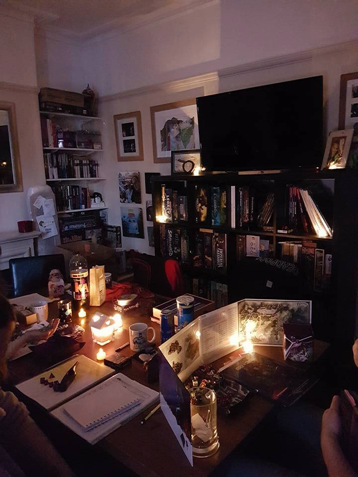
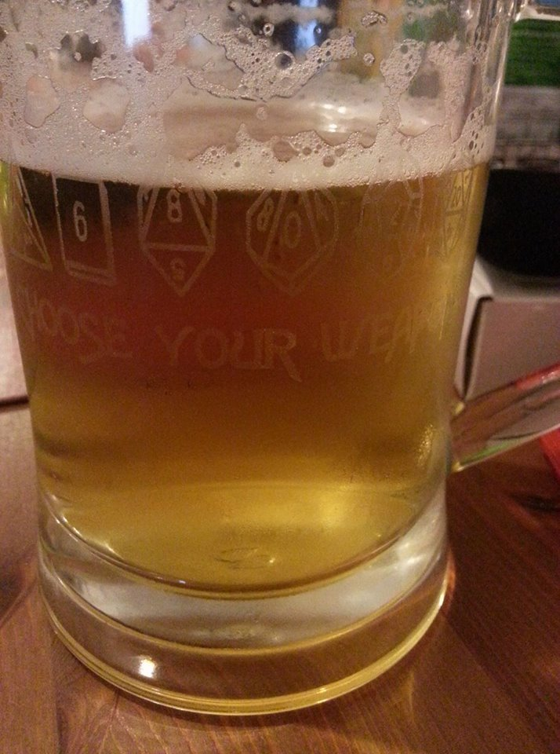
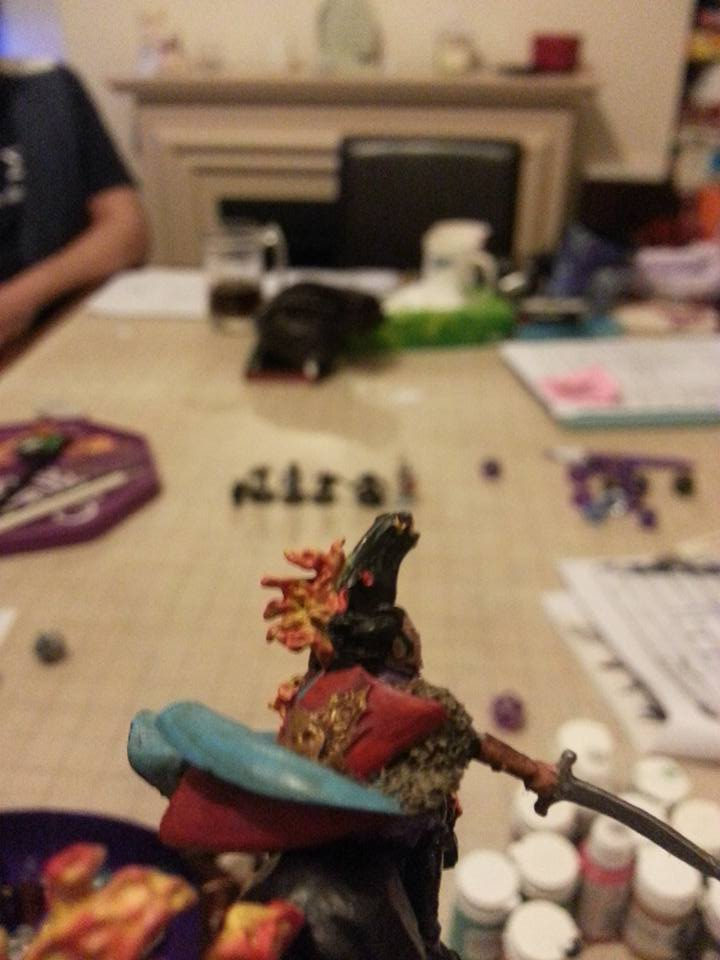

POSTS
D&D the Why and the What
Introduction
I have been playing D&D for a few years now. I have always wanted to play it ever since I was a teenager. However, it was hard to find a group that played it. I think it’s due to living in Belgium and the game not being that popular there or perhaps I never met the right people back then. Non the less, when I moved over to the UK and I met some of my partners friends my interest got rekindled. He had a collection of 3.5 books so I asked if he would be interested in running a game. Soon after we were making up characters, chucking dice and our kids seemed to enjoy themselves as well. 
What is D&D?
In order to explain that, I think the concept of a role playing game needs to be explained first and the best way to describe that would be calling it ‘imaginative play’ or ‘collaborative story telling’. Which for me is defined as cooperative play, where we share responsibility, and creatively solve problems posed to us by an imaginary universe/world. Just think back to those childhood days where you pretended to be a all sorts of things. It’s comparative to that, except it is guided by rules and guidelines. Dice are used to represent the chances in success of what you want to do. It’s a very social experience where interaction and communication are key elements.

Why play D&D?
Well, strap yourself in and get ready for an emotional ride, with highs and lows, fear, joy, exhilaration, suspense and sadness, but above all just plain fun. 
Sit down around a table with friends and enjoy a good time, no mobiles or social media, nothing hiding behind the screens. Cooperate and communicate face to face. Work your imagination and solve problems put in front of you. Anticipation of a story unfolding together with friends who steer it into unknown directions.